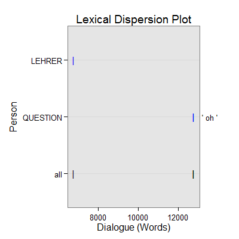

dc_oh(text.var, grouping.var, n.before = 1, tot = FALSE, n.after = n.before, ord.inds = TRUE, markup = c("<<", ">>"), name = "oh", ...)dc_oh_begin(text.var, grouping.var, n.before = 1, tot = FALSE, n.after = n.before, ord.inds = TRUE, markup = c("<<", ">>"), name = "oh", fun1, fun2 = NULL, ...)
TRUE condenses sub-units (e.g., sentences)
into turns of talk for that grouping.var.TRUE inds is ordered least to greatest.c("", "") to not mark the oh discourse
markers.termco and
trans_context. The function in dc_oh_begin
ensures that each has no more than n words before the "oh". The defaut number
of words is 0 or less. This can be changed by supplying an argument to
n via control. For example to set the number of words to 2
use: control = list(n = 2)).termco and
trans_context. This argument in dc_oh_begin is
ignored.termco.Returns returns a list of 2:
countsA termco object of oh discourse marker counts.
ohA trans_context object of oh discourse connectors in context.
dc_oh - Extract oh discourse connectors (a marker Schiffrin (1987)
terms a marker of "information management") in context.
dc_oh_begin - An extension of dc_oh that requires the "oh" to
come at the begining of the word.
Schiffrin, D. (1987). Discourse markers. (pp. 73-101). London: Cambridge University Press.
out <- with(pres_debates2012[1:1000, ], dc_oh(dialogue, person)) out[1]$counts person word.count oh 1 OBAMA 6258 0 2 ROMNEY 6733 0 3 CROWLEY 713 0 4 LEHRER 765 1(.13%) 5 QUESTION 201 2(1.00%)out[2]$oh =================================== Event 1: [lines 448-450] OBAMA: You've done a great job. ** LEHRER: <<Oh>>, well, no. LEHRER: But the fact is government the role of government and governing, we've lost a pod in other words. =================================== Event 2: [lines 876-878] QUESTION: Governor Romney, you have stated that if you're elected president, you would plan to reduce the tax rates for all the tax brackets and that you would work with the Congress to eliminate some deductions in order to make up for the loss in revenue. ** QUESTION: Concerning the these various deductions, the mortgage deductions, the charitable deductions, the child tax credit and also the <<oh>>, what's that other credit? QUESTION: I forgot. =================================== Event 3: [lines 879-881] OBAMA: You're doing great. ** QUESTION: <<Oh>>, I remember. QUESTION: The education credits, which are important to me, because I have children in college.plot(out)
## Save externally use .doc or .txt ## print(out[[2]], file="oh.doc")